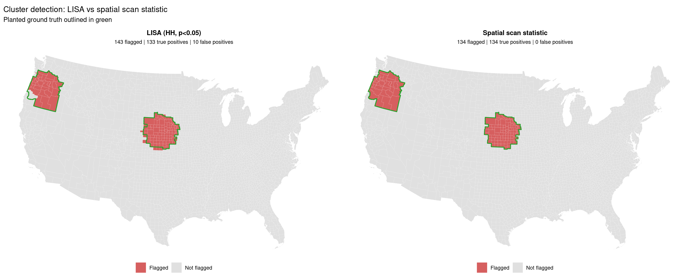

library(tidyverse)
library(sf)
library(spdep)
library(patchwork)
set.seed(42)
out_dir <- file.path(tempdir(), "mod07")
dir.create(out_dir, showWarnings = FALSE, recursive = TRUE)
theme_set(
theme_minimal(base_size = 11) +
theme(
plot.background = element_rect(fill = "white", colour = NA),
panel.background = element_rect(fill = "white", colour = NA),
panel.grid.minor = element_blank()
)
)
theme_map <- function() {
theme_void(base_size = 11) +
theme(
plot.background = element_rect(fill = "white", colour = NA),
panel.background = element_rect(fill = "white", colour = NA),
plot.title = element_text(face = "bold", size = 11, hjust = 0.5),
plot.subtitle = element_text(size = 9, hjust = 0.5),
legend.position = "right"
)
}
# k-nearest scan windows. Cap k at 150 (not 900) and nsim at 99 (not 199):
# a 900 × 3,108 window matrix is ~2.8 million cells per scan; 199 Monte Carlo
# draws of that is too slow for a tutorial render. k = 150 still covers
# compact windows up to ~15% of counties in dense regions and the 250 km
# planted clusters used later.
MAXK <- 150L
NSIM <- 99L
# Precompute knn index matrix (self in column 1, then k-1 nearest neighbours)
knn_index <- function(xy, k = MAXK) {
n <- nrow(xy)
k_use <- min(as.integer(k), n)
if (k_use <= 1L) {
return(matrix(seq_len(n), nrow = n, ncol = 1L))
}
knn <- knearneigh(xy, k = k_use - 1L)
cbind(seq_len(n), knn$nn)
}
row_cumsum <- function(M) {
out <- M
if (ncol(M) >= 2L) {
for (j in 2:ncol(M)) out[, j] <- out[, j - 1L] + M[, j]
}
out
}
# Vectorised Kulldorff Poisson LLR over k-nearest windows.
# Returns the matrix of LLRs (n × k), with invalid windows set to -Inf.
scan_llr_mat <- function(ovec, e_vec, NB, max_e_frac = 0.15) {
n <- length(ovec)
k <- ncol(NB)
Omat <- matrix(ovec[NB], nrow = n, ncol = k)
Emat <- matrix(e_vec[NB], nrow = n, ncol = k)
Oz <- row_cumsum(Omat)
Ez <- row_cumsum(Emat)
Otot <- sum(ovec)
Etot <- sum(e_vec)
Oout <- Otot - Oz
Eout <- Etot - Ez
llr <- ifelse(Oz > 0, Oz * log(Oz / pmax(Ez, 1e-12)), 0) +
ifelse(Oout > 0, Oout * log(Oout / pmax(Eout, 1e-12)), 0)
elevated <- (Oz / pmax(Ez, 1e-12)) > (Oout / pmax(Eout, 1e-12))
size_ok <- Ez <= max_e_frac * Etot
llr[!(elevated & size_ok & is.finite(llr))] <- -Inf
llr
}
scan_max <- function(ovec, e_vec, NB, max_e_frac = 0.15) {
max(scan_llr_mat(ovec, e_vec, NB, max_e_frac))
}
scan_arg <- function(ovec, e_vec, NB, max_e_frac = 0.15) {
llr <- scan_llr_mat(ovec, e_vec, NB, max_e_frac)
idx <- which.max(llr)
n <- nrow(NB)
ci <- ((idx - 1L) %% n) + 1L
ck <- ((idx - 1L) %/% n) + 1L
members <- NB[ci, seq_len(ck)]
list(llr = llr[idx], centre = ci, size = ck, members = members)
}
Module 07: Spatial Epidemiology
Spatial Cluster Detection
Learning objectives - Implement the circular spatial scan statistic (Kulldorff, 1997) - Detect significant disease clusters with Monte Carlo permutation inference - Apply Local Moran’s I (LISA) as an autocorrelation view of clustering - Evaluate cluster detection performance (sensitivity, specificity, PPV) - Visualise detected clusters against planted ground truth - Compare spatial scan vs LISA for cluster detection
Data: Data/usa_data.csv — CDC adult diabetes prevalence and County Health Rankings covariates for 3,108 US counties (CONUS + DC)
Geometries: Data/US_COUNTY.shp — county polygons in NAD83 Albers (EPSG:5070)
Estimated time: 3 hours | Level: Advanced
Libraries: sf, spdep, ggplot2, patchwork
1. Spatial Clusters
A spatial cluster is a part of the map where something happens more (or less) than you’d expect by chance — cases bunched together in space rather than scattered randomly. The whole point of this series has been finding and validating them: the diabetes belt is a spatial cluster, and the tolerance contours, the BYM structured effect, and the EB-smoothed hotspots were all different ways of separating a real cluster from random noise.
The core idea rests on a null of “no pattern.” Imagine the events were sprinkled completely at random across the population — that’s complete spatial randomness. A cluster is a departure from that: somewhere the events are denser than random chance would produce. The catch you’ve seen repeatedly is that raw counts fool you, because events pile up where people live. So “more than expected” always means more than expected given the population at risk — cases over controls, observed over expected — not just more dots.
There are two genuinely different questions people mean by “cluster,” and they need different tools:
Where is it? Cluster detection pins down location and extent. This is what a kernel-density risk surface and its tolerance contours do — draw a boundary around the elevated region. The classic tool for this is the spatial scan statistic (Kulldorff’s SaTScan): slide a circle of growing radius across the map and find the window where the inside-vs-outside risk ratio is most extreme, then test it by simulation. Local indicators like Local Moran’s I (LISA) and the Getis–Ord \(G_i^*\) do a related job on areal data, flagging each county as part of a high-high cluster, a low-low cluster, or a high-low outlier.
Is there clustering at all? Cluster tests ask a global yes/no — is the whole map more clumped than random? — without naming a location. Moran’s I is the workhorse: it measures whether nearby areas hold similar values (positive = clustered, near zero = random, negative = a checkerboard). The BYM structured effect is the model-based cousin — it estimated how much of the variation was spatially clustered rather than idiosyncratic.
It’s worth separating two flavours of clustering, because they get conflated. One is contagion-style — a true hotspot where risk is genuinely elevated in one place (a contaminated site, the diabetes belt). The other is autocorrelation — nearby areas simply resemble each other everywhere, a smooth gradient with no single hotspot. Moran’s I is high in both cases; distinguishing them is why local statistics and scan windows exist.
Two cautions that run through everything you’ve built. First, significance depends entirely on the null and the “expected” — get the population baseline wrong and you’ll manufacture clusters out of population density, which is exactly the trap KDE risk and SMRs are designed to avoid. Second, testing every location invites false positives (thousands of counties, test each at 5% and you’ll “find” clusters by chance), which is why the honest tools lean on Monte Carlo and multiple-comparison corrections rather than raw p-values.
2. Kulldorff Spatial Scan Statistic
The Kulldorff spatial scan statistic is a powerful method for detecting geographical clusters of disease occurrence. It systematically scans a map by moving a circular window of varying size across different locations and, at each position and radius, compares the observed number of cases within the window to the expected number based on a null hypothesis of spatial randomness.
The likelihood of seeing such a concentration of cases by chance is calculated using a log-likelihood ratio (LLR) statistic:
\[ \mathrm{LLR}(Z) = \log \left[ \left( \frac{O_Z}{E_Z} \right)^{O_Z} \left( \frac{O-O_Z}{E-E_Z} \right)^{O-O_Z} \right] \]
- \(O_Z\): Observed cases within the scanning window (candidate cluster \(Z\))
- \(E_Z\): Expected cases within window \(Z\) (under the null hypothesis)
- \(O\): Total observed cases in the entire study area
- \(E\): Total expected cases in the study area
Equivalently, \(\mathrm{LLR}(Z) = O_Z\log(O_Z/E_Z) + (O-O_Z)\log((O-O_Z)/(E-E_Z))\), evaluated only for windows where the inside rate exceeds the outside rate.
The scanning window that yields the highest LLR identifies the most likely cluster (MLC), i.e. the location and size where cases are unusually concentrated. To test whether the identified cluster is statistically significant, the method uses Monte Carlo hypothesis testing: cases are randomly reassigned many times (multinomial under the null, proportional to expected counts) to compute the likelihood of observing such a cluster by chance.
The Kulldorff spatial scan statistic under the Poisson model — one of the most common formulations — is the foundation of the widely used SaTScan software. This method effectively accounts for heterogeneous population at risk and adjusts for multiple testing, providing a principled way to localise and assess disease clusters in geographical data.
2.3 Two Canonical Spatial-Cluster Views
Two views on the same US county diabetes map:
- Left — Local Moran’s I (LISA): classify each county as a hot-spot / cold-spot / spatial outlier (autocorrelation view).
- Right — Kulldorff Poisson spatial scan: the single most likely cluster (detection view).
raw <- read_csv("Data/usa_data.csv", show_col_types = FALSE)
df <- tibble(
fips = as.integer(raw$fips),
county = raw$county,
state_abbr = raw$state_abbr,
state_name = raw$state_name,
x_m = raw$centroid_x_m,
y_m = raw$centroid_y_m,
diabetes_prev = raw$y_diabetes_prevalence_adults_with_diabetes
)
county_shapes <- st_read("Data/US_COUNTY.shp", quiet = TRUE)
county_shapes$FIPS <- as.integer(county_shapes$FIPS)
# Shannon County SD (46113) was renamed Oglala Lakota (46102)
county_shapes$FIPS[county_shapes$FIPS == 46113] <- 46102
gdf <- county_shapes %>%
inner_join(df, by = c("FIPS" = "fips"))
n <- nrow(gdf)
y <- gdf$diabetes_prev
# ---- LISA (queen contiguity) ---------------------------------------------- #
nb_q <- poly2nb(gdf, queen = TRUE)Warning in poly2nb(gdf, queen = TRUE): some observations have no neighbours;
if this seems unexpected, try increasing the snap argument.Warning in poly2nb(gdf, queen = TRUE): neighbour object has 3 sub-graphs;
if this sub-graph count seems unexpected, try increasing the snap argument.lw_q <- nb2listw(nb_q, style = "W", zero.policy = TRUE)
gm <- moran.mc(y, lw_q, nsim = NSIM, zero.policy = TRUE)
lisa <- localmoran(y, lw_q, zero.policy = TRUE)
lisa_p <- lisa[, "Pr(z != E(Ii))"]
z_std <- as.numeric(scale(y))
z_lag <- lag.listw(lw_q, z_std, zero.policy = TRUE)
quadrant <- case_when(
z_std > 0 & z_lag > 0 ~ "HH",
z_std < 0 & z_lag < 0 ~ "LL",
z_std > 0 & z_lag < 0 ~ "HL",
TRUE ~ "LH"
)
gdf$lisa <- factor(
ifelse(lisa_p < 0.05, quadrant, "NS"),
levels = c("HH", "LL", "HL", "LH", "NS")
)
# ---- Kulldorff Poisson scan ----------------------------------------------- #
set.seed(11)
prev <- y / 100
Nscr <- pmax(25L, as.integer(round(rlnorm(n, meanlog = log(400), sdlog = 1.3))))
o <- as.numeric(round(prev * Nscr))
e <- (sum(o) / sum(Nscr)) * Nscr
e <- e * (sum(o) / sum(e))
Otot <- sum(o)
Etot <- sum(e)
xy <- cbind(gdf$x_m, gdf$y_m)
NB <- knn_index(xy, k = MAXK)
mlc <- scan_arg(o, e, NB, max_e_frac = 0.15)
members <- mlc$members
Oc <- sum(o[members])
Ec <- sum(e[members])
RR <- (Oc / Ec) / ((Otot - Oc) / (Etot - Ec))
# Monte Carlo: 99 multinomial permutations of cases (reduced from 199)
null_llr <- numeric(NSIM)
for (b in seq_len(NSIM)) {
o_null <- as.numeric(rmultinom(1L, size = as.integer(Otot), prob = e / Etot))
null_llr[b] <- scan_max(o_null, e, NB, max_e_frac = 0.15)
}
p_mlc <- (sum(null_llr >= mlc$llr) + 1) / (NSIM + 1)
gdf$in_mlc <- FALSE
gdf$in_mlc[members] <- TRUE
gdf$smr <- prev / mean(prev)
cat(sprintf("Global Moran's I=%.3f (p=%.3f)\n", unname(gm$statistic), gm$p.value))Global Moran's I=0.665 (p=0.010)cat(sprintf(
"MLC: %d counties, RR=%.2f, LLR=%.0f, p=%.3f\n",
length(members), RR, mlc$llr, p_mlc
))MLC: 145 counties, RR=1.34, LLR=662, p=0.010top_states <- sort(table(gdf$state_abbr[members]), decreasing = TRUE)
cat("Top states in MLC:\n")Top states in MLC:print(head(top_states, 6))
MS LA AR AL
74 44 17 10 cat("\nLISA class counts:\n")
LISA class counts:print(table(gdf$lisa))
HH LL HL LH NS
489 469 15 26 2107 2.4 Mapping
Side-by-side LISA map versus scan outline. The most likely cluster is dissolved to a single outline and overlaid on the SMR choropleth.
lisa_colors <- c(
HH = "#b2182b", LL = "#2166ac", HL = "#f4a582", LH = "#92c5de", NS = "#efefef"
)
lisa_labs <- c(
HH = "Hot-spot (High-High)",
LL = "Cold-spot (Low-Low)",
HL = "Outlier (High-Low)",
LH = "Outlier (Low-High)",
NS = "Not significant"
)
n_lisa <- as.integer(table(gdf$lisa)[names(lisa_colors)])
legend_labs <- sprintf("%s (n=%d)", lisa_labs, n_lisa)
states <- gdf %>%
group_by(STATE) %>%
summarise(geometry = st_union(geometry), .groups = "drop")
mlc_outline <- st_sf(geometry = st_union(gdf[gdf$in_mlc, ]))
p_lisa <- ggplot(gdf) +
geom_sf(aes(fill = lisa), colour = "white", linewidth = 0.05) +
geom_sf(data = states, fill = NA, colour = "white", linewidth = 0.35) +
scale_fill_manual(
values = lisa_colors,
labels = legend_labs,
drop = FALSE
) +
labs(
title = "Local Moran's I (LISA) — autocorrelation view",
subtitle = sprintf(
"Each county classified · Global Moran's I = %.2f (p=%.3f)",
unname(gm$statistic), gm$p.value
),
fill = NULL
) +
theme_map() +
theme(legend.position = "bottom")
p_scan <- ggplot(gdf) +
geom_sf(aes(fill = smr), colour = "white", linewidth = 0.05) +
geom_sf(data = states, fill = NA, colour = "white", linewidth = 0.35) +
geom_sf(data = mlc_outline, fill = NA, colour = "black", linewidth = 0.7) +
scale_fill_gradient2(
name = "SMR (county rate / national)",
low = "#2166ac", mid = "#f7f7f7", high = "#b2182b",
midpoint = 1, limits = c(0.6, 1.4), oob = scales::squish
) +
labs(
title = "Kulldorff spatial scan — detection view",
subtitle = sprintf(
"Most likely cluster: %d counties, RR=%.2f, p=%.3f (outlined)",
length(members), RR, p_mlc
)
) +
theme_map()
p_two <- (p_lisa | p_scan) +
plot_annotation(
title = "Two answers to 'where is the cluster?' — same county diabetes data, real polygons"
)
print(p_two)
ggsave(file.path(out_dir, "lisa_vs_scan.png"), p_two,
width = 16, height = 7, dpi = 150)The left panel is the autocorrelation view. Global Moran’s I (printed above) measures whether nearby counties really do resemble each other. Local Moran’s then breaks that global number down county by county: High-High hot-spots, Low-Low cold-spots, and a scatter of spatial outliers (counties that disagree with their neighbours — a high county surrounded by low ones, or vice versa). Counts for each class are printed in the previous chunk and in the legend. Every county gets a label; there’s no single boundary. Note this is a per-location classification, and the p-values are uncorrected for the ~3,100 simultaneous tests, so some scattered significant counties are expected by chance.
The right panel is the detection view. The Kulldorff Poisson scan grows \(k\)-nearest windows around every county, computes the inside-vs-outside likelihood ratio, and reports the single window that maximises it — then validates it against 99 random relabellings (reduced from 199 for tutorial speed; \(k\) capped at 150 rather than 900). The most likely cluster is outlined; size, relative risk, \(p\)-value, and top states are printed above.
That difference is the whole point. LISA measures similarity everywhere and lights up a belt as many hot-spot counties (and would call a smooth gradient “clustered” too), while the scan performs a single detection and draws one honest boundary around the most anomalous compact region. One caveat: with a strong regional gradient the scan’s primary cluster is sensitive to the maximum-size limit — at the textbook 50%-population setting it can balloon to essentially the entire South; windows here are capped at 15% of total expected counts to recover an interpretable core.
3. Cluster Detection Performance
In this section we evaluate how well the Kulldorff spatial scan method detects true clusters when we know the ground truth. Specifically, we plant two high-risk discs on the county map, simulate Poisson case counts, and score two detectors — the scan and LISA hot-spots — against the planted truth:
- Sensitivity (true positive rate): proportion of actual cluster counties correctly identified.
- Specificity (true negative rate): proportion of non-cluster counties correctly excluded.
- PPV (positive predictive value): probability that a detected cluster county is indeed part of a true cluster.
- NPV (negative predictive value): probability that a county not detected is truly outside any cluster.
We also check the relative risk (observed/expected rate) inside versus outside the detected cluster, and compare this to the size of the effect we planted.
Two true clusters: Nebraska and Oregon state centroids, radius 250 km, relative risks 1.8 and 1.5.
set.seed(7)
pop <- pmax(50L, as.integer(round(rlnorm(n, meanlog = log(1500), sdlog = 0.7))))
E_plant <- 0.10 * pop
seed_of <- function(st) {
mask <- gdf$state_abbr == st
ctr <- colMeans(xy[mask, , drop = FALSE])
which.min(rowSums((xy - matrix(ctr, n, 2, byrow = TRUE))^2))
}
s1 <- seed_of("NE")
s2 <- seed_of("OR")
Rk <- 250000
true1 <- sqrt(rowSums((xy - matrix(xy[s1, ], n, 2, byrow = TRUE))^2)) < Rk
true2 <- sqrt(rowSums((xy - matrix(xy[s2, ], n, 2, byrow = TRUE))^2)) < Rk
TH1 <- 1.8
TH2 <- 1.5
theta <- rep(1, n)
theta[true1] <- TH1
theta[true2] <- TH2
O_plant <- as.numeric(rpois(n, lambda = E_plant * theta))
true_any <- true1 | true2
cat(sprintf(
"Planted: cluster1 (NE) %d counties RR=%.1f; cluster2 (OR) %d counties RR=%.1f; baseline E mean=%.0f\n",
sum(true1), TH1, sum(true2), TH2, mean(E_plant)
))Planted: cluster1 (NE) 100 counties RR=1.8; cluster2 (OR) 34 counties RR=1.5; baseline E mean=193e_plant <- E_plant * (sum(O_plant) / sum(E_plant))
NB_plant <- knn_index(xy, k = MAXK)
# Null max LLR under multinomial (nsim = 99). Windows up to 50% of total E
# so both planted discs can be recovered.
null_plant <- numeric(NSIM)
for (b in seq_len(NSIM)) {
o_null <- as.numeric(rmultinom(
1L, size = as.integer(sum(O_plant)), prob = e_plant / sum(e_plant)
))
null_plant[b] <- scan_max(o_null, e_plant, NB_plant, max_e_frac = 0.5)
}
# Sequential scan: claim the MLC, drop its members, repeat
scan_on <- function(active) {
m_a <- length(active)
k_a <- min(MAXK, m_a)
NB_a <- knn_index(xy[active, , drop = FALSE], k = k_a)
o_s <- O_plant[active]
e_s <- e_plant[active]
e_s <- e_s * (sum(o_s) / sum(e_s))
hit <- scan_arg(o_s, e_s, NB_a, max_e_frac = 0.5)
list(llr = hit$llr, members = active[hit$members])
}
claimed <- rep(FALSE, n)
clusters <- list()
for (round in 1:6) {
active <- which(!claimed)
hit <- scan_on(active)
p_hit <- (sum(null_plant >= hit$llr) + 1) / (NSIM + 1)
if (p_hit >= 0.05) break
clusters[[length(clusters) + 1L]] <- list(
members = hit$members, llr = hit$llr, p = p_hit
)
claimed[hit$members] <- TRUE
}
scan_detected <- claimed
cat(sprintf("Scan found %d significant cluster(s):\n", length(clusters)))Scan found 2 significant cluster(s):if (length(clusters)) {
for (i in seq_along(clusters)) {
mem <- clusters[[i]]$members
oc <- sum(O_plant[mem])
ec <- sum(e_plant[mem])
rr_i <- (oc / ec) / ((sum(O_plant) - oc) / (sum(e_plant) - ec))
cat(sprintf(
" cluster%d: %d counties, RR=%.2f, LLR=%.0f, p=%.3f\n",
i, length(mem), rr_i, clusters[[i]]$llr, clusters[[i]]$p
))
}
} else {
cat(" none at p<0.05\n")
} cluster1: 100 counties, RR=1.79, LLR=4661, p=0.010
cluster2: 34 counties, RR=1.44, LLR=739, p=0.010# Observed MLC for the permutation figure (primary window on the full map)
obs_scan <- scan_arg(O_plant, e_plant, NB_plant, max_e_frac = 0.5)
# LISA hot-spots as an alternative detector
smr_plant <- O_plant / E_plant
lisa_p2 <- localmoran(smr_plant, lw_q, zero.policy = TRUE)[, "Pr(z != E(Ii))"]
z2 <- as.numeric(scale(smr_plant))
lag2 <- lag.listw(lw_q, z2, zero.policy = TRUE)
lisa_detected <- (z2 > 0) & (lag2 > 0) & (lisa_p2 < 0.05)
score <- function(detected, name) {
tp <- sum(detected & true_any)
fp <- sum(detected & !true_any)
fn <- sum(!detected & true_any)
tn <- sum(!detected & !true_any)
sen <- if ((tp + fn) > 0) tp / (tp + fn) else 0
spe <- if ((tn + fp) > 0) tn / (tn + fp) else 0
ppv <- if ((tp + fp) > 0) tp / (tp + fp) else 0
npv <- if ((tn + fn) > 0) tn / (tn + fn) else 0
obs_in <- sum(O_plant[detected]); exp_in <- sum(E_plant[detected])
obs_out <- sum(O_plant[!detected]); exp_out <- sum(E_plant[!detected])
rr <- if (exp_in > 0 && exp_out > 0) (obs_in / exp_in) / (obs_out / exp_out) else NA_real_
cat(sprintf("\n%s Detection Performance:\n", name))
cat(sprintf(" TP=%d FP=%d FN=%d TN=%d\n", tp, fp, fn, tn))
cat(sprintf(
" Sensitivity=%.3f Specificity=%.3f PPV=%.3f NPV=%.3f\n",
sen, spe, ppv, npv
))
cat(sprintf(" RR inside vs outside detected: %.3f\n", rr))
list(sen = sen, spe = spe, ppv = ppv, npv = npv, rr = rr,
tp = tp, fp = fp, fn = fn, tn = tn)
}
cat(sprintf("\n(planted RRs: cluster1=%.1f, cluster2=%.1f)\n", TH1, TH2))
(planted RRs: cluster1=1.8, cluster2=1.5)sc <- score(scan_detected, "Kulldorff scan")
Kulldorff scan Detection Performance:
TP=134 FP=0 FN=0 TN=2974
Sensitivity=1.000 Specificity=1.000 PPV=1.000 NPV=1.000
RR inside vs outside detected: 1.705li <- score(lisa_detected, "LISA hot-spots")
LISA hot-spots Detection Performance:
TP=133 FP=10 FN=1 TN=2964
Sensitivity=0.993 Specificity=0.997 PPV=0.930 NPV=1.000
RR inside vs outside detected: 1.649gdf$theta <- theta
gdf$smr_plant <- smr_plant
gdf$true_any <- true_any
gdf$scan_detected <- scan_detected
gdf$lisa_detected <- lisa_detectedoutcome <- function(det) {
dplyr::case_when(
det & true_any ~ "TP",
det & !true_any ~ "FP",
!det & true_any ~ "FN",
TRUE ~ "TN"
)
}
oc_colors <- c(TP = "#2ca02c", FN = "#d62728", FP = "#ff7f0e", TN = "#eeeeee")
panel_outcome <- function(det, res, title) {
gdf$._o <- factor(outcome(det), levels = names(oc_colors))
ggplot(gdf) +
geom_sf(aes(fill = ._o), colour = "white", linewidth = 0.05) +
geom_sf(data = states, fill = NA, colour = "grey60", linewidth = 0.25) +
scale_fill_manual(
values = oc_colors,
labels = sprintf(
"%s (n=%d)", names(oc_colors),
c(res$tp, res$fn, res$fp, res$tn)
),
drop = FALSE
) +
labs(
title = title,
subtitle = sprintf(
"Sens=%.2f Spec=%.2f PPV=%.2f RR=%.2f",
res$sen, res$spe, res$ppv, res$rr
),
fill = NULL
) +
theme_map() +
theme(legend.position = "bottom")
}
p_truth <- ggplot(gdf) +
geom_sf(aes(fill = theta), colour = "white", linewidth = 0.05) +
geom_sf(data = states, fill = NA, colour = "grey60", linewidth = 0.25) +
scale_fill_gradient(name = "Planted RR", low = "#fee5d9", high = "#a50f15",
limits = c(1, TH1)) +
labs(
title = "TRUTH: two planted clusters",
subtitle = sprintf("NE (RR=%.1f, %d cos), OR (RR=%.1f, %d cos)",
TH1, sum(true1), TH2, sum(true2))
) +
theme_map()
p_obs <- ggplot(gdf) +
geom_sf(aes(fill = smr_plant), colour = "white", linewidth = 0.05) +
geom_sf(data = states, fill = NA, colour = "grey60", linewidth = 0.25) +
scale_fill_gradient2(
name = "Observed SMR (O/E)", low = "#2166ac", mid = "#f7f7f7", high = "#b2182b",
midpoint = 1, limits = c(0.5, 1.8), oob = scales::squish
) +
labs(
title = "Simulated observed data (SMR)",
subtitle = "What each detector actually sees"
) +
theme_map()
p_perf <- (p_truth | p_obs) /
(panel_outcome(scan_detected, sc, "Kulldorff scan — detection outcome") |
panel_outcome(lisa_detected, li, "LISA hot-spots — detection outcome")) +
plot_annotation(
title = "Cluster-detection performance against known ground truth",
subtitle = "Two planted clusters, Poisson-simulated counts"
)
print(p_perf)
ggsave(file.path(out_dir, "cluster_performance.png"), p_perf,
width = 16, height = 11, dpi = 150)4. Permutation Distribution & Inference
The scan’s \(p\)-value is the rank of the observed maximum LLR among the Monte Carlo null maxima. Because we already have those 99 null draws from the planted-cluster scan, we can plot the null histogram against the observed statistic, and the LLR-by-window-size curve around the most likely centre.
best_llr <- obs_scan$llr
p_value <- (sum(null_plant >= best_llr) + 1) / (NSIM + 1)
cat(sprintf(
"Most-likely cluster: centre county #%d, %d counties, LLR=%.1f, p=%.4f\n",
obs_scan$centre, obs_scan$size, best_llr, p_value
))Most-likely cluster: centre county #544, 100 counties, LLR=4660.5, p=0.0100cat(sprintf(
"Null LLR range: %.2f to %.2f\n", min(null_plant), max(null_plant)
))Null LLR range: 6.33 to 12.49p_null <- ggplot(tibble(llr = null_plant), aes(llr)) +
geom_histogram(bins = 30, fill = "#AEC6CF", colour = "white", alpha = 0.9) +
geom_vline(xintercept = best_llr, colour = "#D65F5F", linewidth = 1.1) +
annotate(
"text", x = Inf, y = Inf, hjust = 1.05, vjust = 1.4, size = 3.2,
label = sprintf("Observed LLR = %.1f\nnull max = %.1f", best_llr, max(null_plant))
) +
labs(
x = "Spatial scan LLR", y = "Count",
title = sprintf("Monte Carlo null distribution (B=%d) p=%.4f", NSIM, p_value)
)
# LLR as the window grows from the MLC centre (knn already ordered by distance)
centre <- obs_scan$centre
order_idx <- NB_plant[centre, ]
sizes <- seq(5L, min(200L, length(order_idx)), by = 5L)
Ot <- sum(O_plant)
Et <- sum(e_plant)
llr_size <- vapply(sizes, function(k) {
mem <- order_idx[seq_len(k)]
Oz <- sum(O_plant[mem]); Ez <- sum(e_plant[mem])
Oout <- Ot - Oz; Eout <- Et - Ez
if (Oz > 0 && Ez > 0 && Oout > 0 && Eout > 0 && (Oz / Ez) > (Oout / Eout)) {
max(0, Oz * log(Oz / Ez) + Oout * log(Oout / Eout))
} else {
0
}
}, numeric(1))
p_size <- ggplot(tibble(size = sizes, llr = llr_size), aes(size, llr)) +
geom_line(colour = "#4878CF", linewidth = 0.9) +
geom_point(colour = "#4878CF", size = 1.4) +
geom_vline(xintercept = obs_scan$size, colour = "#D65F5F",
linetype = "dashed", linewidth = 0.8) +
labs(
x = "Window size (# counties)", y = "LLR",
title = sprintf("LLR by scanning window size (optimum = %d)", obs_scan$size)
)
p_perm <- p_null | p_size
print(p_perm)
ggsave(file.path(out_dir, "scan_permutation.png"), p_perm,
width = 14, height = 5, dpi = 150)The left panel is the significance test. The null relabellings produce a tight range of maximum LLRs (printed above), while the observed cluster sits far beyond that range and lands at (or near) the floor \(p\)-value of \(1/(B+1)\). That gap is normal for a strong, real cluster: the LLR scales with case counts, so a compact region with a 1.5–1.8× excess produces a giant statistic that random shuffling never approaches.
The right panel is the more instructive one. The LLR is evaluated for expanding windows around the most likely centre, using the correct rule — inside rate greater than outside rate (once expected counts are conditioned on the total, an elevated cluster necessarily leaves the outside under-observed). The curve climbs as the window fills with genuinely high-risk counties, peaks near the scan’s optimum (and the planted cluster size), then falls as the window dilutes itself with normal-risk counties. That peak is how the scan chooses its cluster: it is the argmax of this curve, evaluated over every possible centre and radius, not just the one ordering shown here.
5. LISA vs Scan Statistic Comparison
Cross-tabulate LISA hot-spots (HH, \(p<0.05\)) against the scan’s claimed counties and against planted truth. The map outlines the true cluster boundary.
cat("LISA (HH vs not) × scan detected:\n")LISA (HH vs not) × scan detected:print(table(LISA_HH = lisa_detected, Scan = scan_detected)) Scan
LISA_HH FALSE TRUE
FALSE 2964 1
TRUE 10 133cat("\nLISA HH × planted truth:\n")
LISA HH × planted truth:print(table(LISA_HH = lisa_detected, True = true_any)) True
LISA_HH FALSE TRUE
FALSE 2964 1
TRUE 10 133cat("\nScan × planted truth:\n")
Scan × planted truth:print(table(Scan = scan_detected, True = true_any)) True
Scan FALSE TRUE
FALSE 2974 0
TRUE 0 134cat(sprintf(
"\nLISA HH: %d flagged, %d TP, %d FP\n",
sum(lisa_detected), sum(lisa_detected & true_any), sum(lisa_detected & !true_any)
))
LISA HH: 143 flagged, 133 TP, 10 FPcat(sprintf(
"Scan : %d flagged, %d TP, %d FP\n",
sum(scan_detected), sum(scan_detected & true_any), sum(scan_detected & !true_any)
))Scan : 134 flagged, 134 TP, 0 FPtrue_bnd <- st_sf(geometry = st_union(gdf[true_any, ]))
panel_flag <- function(flag, method) {
n_det <- sum(flag)
n_tp <- sum(flag & true_any)
n_fp <- sum(flag & !true_any)
gdf$._f <- factor(ifelse(flag, "Flagged", "Not flagged"),
levels = c("Flagged", "Not flagged"))
ggplot(gdf) +
geom_sf(aes(fill = ._f), colour = "white", linewidth = 0.05) +
geom_sf(data = true_bnd, fill = NA, colour = "#2ca02c", linewidth = 0.7) +
scale_fill_manual(values = c("Flagged" = "#D65F5F", "Not flagged" = "#E0E0E0")) +
labs(
title = method,
subtitle = sprintf("%d flagged | %d true positives | %d false positives",
n_det, n_tp, n_fp),
fill = NULL
) +
theme_map() +
theme(legend.position = "bottom")
}
p_cmp <- (panel_flag(lisa_detected, "LISA (HH, p<0.05)") |
panel_flag(scan_detected, "Spatial scan statistic")) +
plot_annotation(
title = "Cluster detection: LISA vs spatial scan statistic",
subtitle = "Planted ground truth outlined in green"
)
print(p_cmp)
ggsave(file.path(out_dir, "lisa_scan_compare.png"), p_cmp,
width = 16, height = 6.5, dpi = 150)LISA hot-spots and the spatial scan are answering related but different questions on the same planted map. Counts of flagged / true-positive / false-positive counties are printed above — they will move with the random seed, the \(k\) cap, and the number of permutations, so read the printed table rather than memorising a single run. Typically both methods recover most of both planted discs; the scan tends to draw a tighter compact boundary (one test, one region), while LISA can leak a few fringe counties because every location is tested separately.
6. Knowledge Check
- The scan statistic identifies a cluster with \(p=0.03\) based on 200 permutations. How much confidence do you have in this \(p\)-value? How should you interpret and report it given the limited number of permutations?
- The detected cluster has a positive predictive value (PPV) of 0.65. Discuss the implications of this PPV for allocating resources in a public health application.
- The scan restricts the maximum cluster window to 50% of the total population. Explain why such an upper bound is imposed, and what are the potential trade-offs involved with this threshold.
- When LISA finds 18 HH counties and the scan statistic identifies a different 15-county cluster, what might explain the discrepancy between these two cluster detection methods?
- Write code to perform a second-round cluster search: after excluding the primary detected cluster from consideration, re-apply the scan to uncover a secondary most likely cluster.
# Exercise 5 — secondary cluster after dropping the primary MLC
primary <- obs_scan$members
active2 <- setdiff(seq_len(n), primary)
hit2 <- scan_on(active2)
p2 <- (sum(null_plant >= hit2$llr) + 1) / (NSIM + 1)
oc2 <- sum(O_plant[hit2$members])
ec2 <- sum(e_plant[hit2$members])
rr2 <- (oc2 / ec2) / ((sum(O_plant) - oc2) / (sum(e_plant) - ec2))
cat(sprintf(
"Secondary cluster: %d counties, RR=%.2f, LLR=%.0f, p=%.3f\n",
length(hit2$members), rr2, hit2$llr, p2
))Secondary cluster: 34 counties, RR=1.44, LLR=739, p=0.010cat(sprintf(
"Overlap with planted cluster 2 (OR): %d / %d members\n",
sum(true2[hit2$members]), length(hit2$members)
))Overlap with planted cluster 2 (OR): 34 / 34 membersNext → NB-06: Environmental Epidemiology & Spatial Exposure